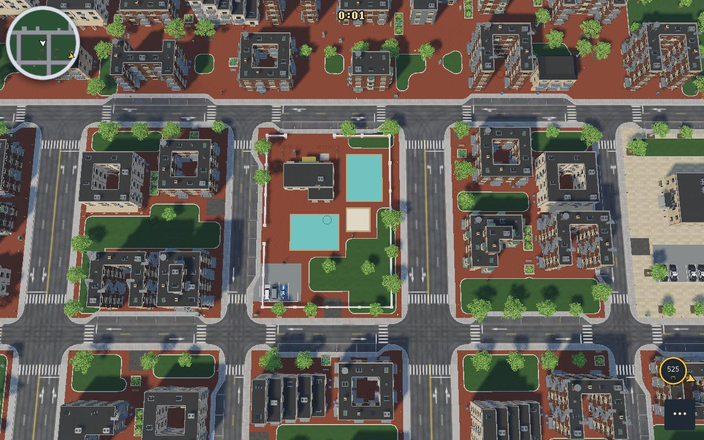
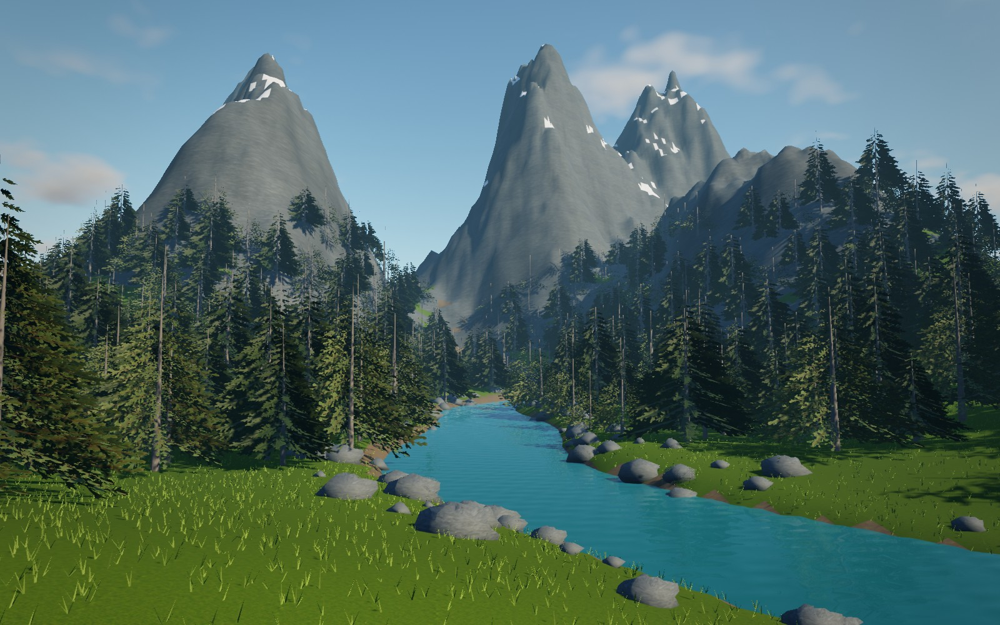
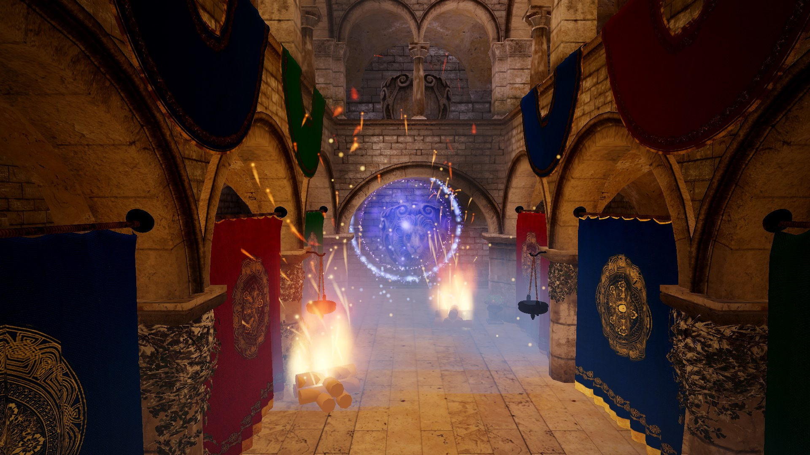

Procedural terrain and nature
Terrain, vegetation and rocks from rules and a seed: a generator of rounded rocks, boulders, slabs and rubble with three LODs and placement by height, slope and masks.
System and roadmap →AIVERSE is an engine where a game is a folder of data and an AI agent builds it through MCP: rules, levels, UI, effects, balance and builds for six platforms.

City built by an agent with the aiverse-roads and aiverse-city-blocks skills

Engine frame
An authored scene: 662 conifers, TerraWeave rocks on the banks, grass and snow under the stock PhysicalSky with volumetric clouds. A real Metal frame without retouching.
Engine systems
Independent, genre-neutral and each with its own contract. Composed together into any game.
Procedural terrain and nature
Terrain, vegetation and rocks from rules and a seed: a generator of rounded rocks, boulders, slabs and rubble with three LODs and placement by height, slope and masks.
System and roadmap →A living environment: wind, fire, earth
Genre-neutral nature fields in ECS: wind, fire, earthquakes and structural stress that react to each other.
System frame in progress
System and roadmap →Water that behaves like water
Universal water: rivers, lakes and ocean, buoyancy and drag, splashes, waves and wakes.
System frame in progress
System and roadmap →
Virtualized geometry
Huge meshes without hand-made LODs: paged streaming, clusters with crack-free detail transitions and GPU culling on Metal and Vulkan.
System and roadmap →Cameras and cinematic frames
Camera scenes as data: several cameras, frame scheduling, image capture and authoring through MCP and Studio.
System frame in progress
System and roadmap →Digital humans
A facial controller and GPU morphs on top of MotionWeave animation: expressions, blinking, eyes and LODs for characters.
System and roadmap →
Lighting and global illumination
Light as an entity component, GI probes, lightmap baking with the engine's own path tracer and dynamic indirect lighting.
System and roadmap →
Post-processing and atmosphere
HDR, exposure and tone mapping, bloom, DoF, motion blur, TAA, colour grading and screen-space atmosphere with quality profiles.
System and roadmap →
Particle effects
Particles, ribbons, smoke, fire and explosions from effect graphs, with CPU and GPU emitters and ECS event bindings.
System and roadmap →Character animation
Animation graphs, retargeting between rigs, skeleton LODs and attachments — one animation system for every genre.
System frame in progress
System and roadmap →How the engine works

game.json, rules.json, levels, UI, audio and effects are readable files. No binary scenes: people and agents edit the same thing.
Armies, characters, vehicles and racing, combat, movement, stealth, dialogue, cards, puzzles, economy — 88 deterministic libraries that work in any project.
Bot matches, scenarios with checks, balance matrices, a rules linter and screenshots: the agent sees the result instead of working blind.
From idea to store
Data instead of code
The worker from the skirmish RTS template: gathers gold and wood, builds five structures and fights with a pick. Not a line of C++.
When data is not enough, three steps up:
"peasant": { "health": { "max": 220, "armorType": "light" }, "move": { "speed": 2.4, "radius": 0.35 }, "sight": 7, "weapons": [{ "id": "pick", "range": 0.5, "damage": 5, "cooldown": 1.5 }], "cost": { "gold": 75, "time": 12, "supply": 1 }, "gather": { "gold": { "carry": 10, "time": 2.0 }, "wood": { "carry": 10, "time": 3.0 } }, "builds": ["townhall", "farm", "barracks", "workshop", "tower"], "view": { "shape": "worker", "scale": 0.8 } }
Any genre
The engine is not split into “genre modules”: a genre is only a template, and mechanics are switched on by data and combined freely. Every library is deterministic, tested, saveable and validates its own config.
Units and buildings from data, A*/HPA*/flow fields for thousands of units on maps up to 2048², resources, fog of war, a side-commander AI.
26 templates · aiverse-bots-commanderAuthoritative server with lag-compensated hits, large streamed worlds up to 100 players, recoil and ballistics, bots.
weapon-policies · match-rulesWheeled, tracked, hover and flying vehicles with seats; tracks on spline roads, starting grid, checkpoints, laps, race bots.
vehicle-controllers · aiverse-racesHitboxes, combos and cancel windows, dodge i-frames, parry, lock-on.
combat-actions · melee-combatCoyote time, jump buffer, ledges, ladders, swimming; ability gates and softlock proofs.
character-locomotion · zone-graphSight cones, hearing, suspicion and alerts, disguises; carrying, throwing, ropes, doors.
stealth-senses · physical-interactionsDialogue with conditions, relationships and consequences, backlog; timelines, QTE, slow motion.
narrative-graphs · cinematic-gameplayInitiative, action points, reactions; zones, a priority stack, a tactical grid.
turn-scheduler · card-runtimeSokoban rules, undo/redo and a solver, a puzzle VM; tempo maps; ball possession, passes, shots, periods.
grid-puzzles · rhythm-timing · sports-rulesSeeded runs, encounter budgets, loot tables with a guaranteed rare drop.
run-graph · loot-tablesExact offline progress, layered prestige, production networks and logistics.
big-numbers · offline-productionShop, currencies, quests, passes, energy, clans, tournaments, chests — in JSON.
aiverse::meta · LiveOpsShadows, particles, terrain and post-effects have quality tiers and adapt to the GPU, from old Mali and Adreno to Apple Silicon. Own RHI: Metal, GLES3/WebGL2, GL 3.3, Vulkan.
Network, server and meta
Fixed-point instead of floats, its own RNG and checksums: the same match on an iPhone, an Android phone and in a browser produces the same hash. So you can pick the network model that fits the genre — and host your own server.
one match — one hash
Only commands go over the network. Input rollback with hash checks, correction smoothing, reconnect and late join.
A client and a server that decides everything: large streamed worlds up to 100 players and bots on the server.
aiverse_server on your machine: encrypted UDP and WebSocket, match tickets, server pings, Elo matchmaking, replay-based verdicts.
Shop, currencies, quests, passes, energy, leaderboards, chat, friends and clans, tournaments — from JSON, with its own backend and a ready client.
Ready-made templates
Every template is a fully playable game with bots. Open it in the editor and change it.
Iron and Gold · Iron Front · Starfall Sectors · Frost Crown · Four Ages · Amber Sands · Metal Tide
Mushroom Clash · Shroom Wars · Spore Lanes · Spell Bunkers · Border Rush · Clan Lands · Flag Sectors
Hold the Line · Last Colony · Lane Clash
Hearth and Haul · Underlord
Crystal Dunes · Green Hills · Planets · Wildfire
Crossfire Arena · Breach Protocol · Last Survivor (100 players) · Aim Lab
aiversebuild signs builds, generates icons and splash screens and ships only the plugins the game selected.
Store and ads plugins
App Store · Google Play · RuStore · Yandex Games · Steam · Xsolla · AdMob · AppLovin · ironSource · Yandex Ads · AppMetrica · AppsFlyer · GameAnalytics · Push · Deeplinks
cmake -S . -B build/mac -DCMAKE_BUILD_TYPE=Release cmake --build build/mac -j 8 open build/mac/AiverseEditor.appPrefer not to compile? Download a prebuilt editor.